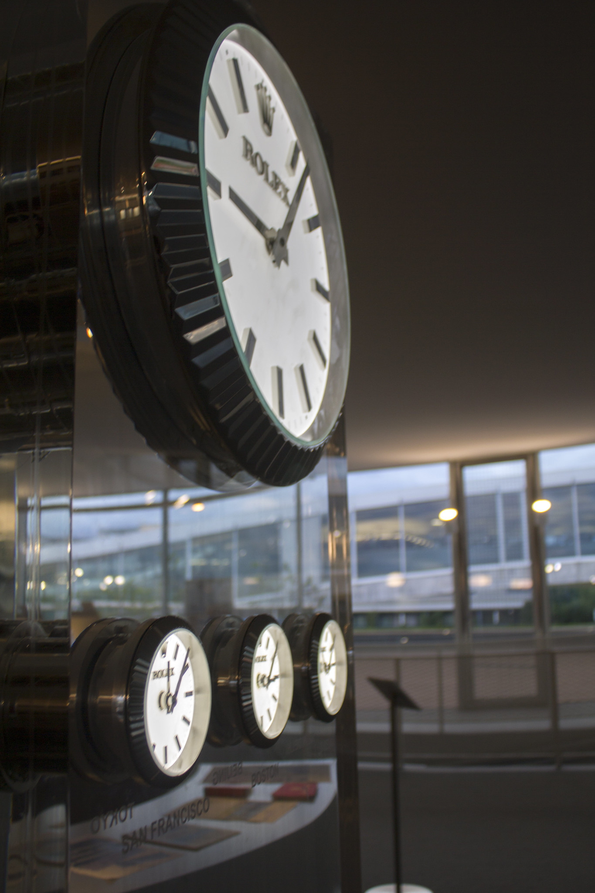

Date/Time: Thursday, 30 January 2020 - 3:00pm to 5:00pmLocation: CESTA (4th floor Wallenberg hall)
Join us for a new take on DH consulting: lighting talks about project ideas or projects-in-progress, followed by feedback from technical DH staff from CIDR, as well as others with experience from the Stanford DH community. This month, we'll follow up the talks with happy hour at Treehouse (4-5).
If you'd like to give a lightning talk, come a few minutes early to sign up!
